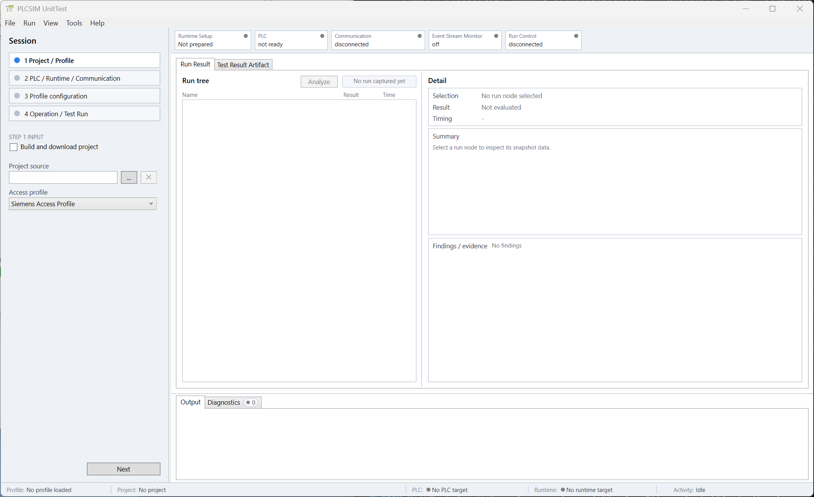

Application purpose
The PLCSIM UnitTest WPF application is the manual and diagnostic workbench for preparing a PLC runtime target, controlling PLC-side UnitTests, observing their evidence, and inspecting the resulting test report. The companion CLI uses the shared workflow for unattended execution and CI.
The application itself remains independent of vendor APIs. Installed access profiles provide project, runtime, PLC, and UnitTest communication capabilities.

User interface
- Session sidebar
- The four-step setup selects the project and profile, PLC/runtime targets, profile configuration, and finally exposes test controls.
- Status badges
- Runtime Setup, PLC, Communication, Event Stream Monitor, and Run Control show separate aspects of current readiness.
- Main content
- Run Result and Test Result Artifact present the latest reconstructed UnitTest result and generated JUnit XML.
- Output, Diagnostics, and Analysis
- Output records chronological workflow progress. Diagnostics retain structured warnings and errors. Analysis creates an on-demand compact summary and an immutable ZIP handoff from retained structured evidence.
- Status line
- The footer identifies the selected profile, project, PLC target, runtime target, and current application activity.
Help contents
This help describes common application behavior. The installed profiles\<profile package>\docs\configuration.md defines the selected profile's configuration fields. Its other packaged documentation describes supported project sources, vendor setup, runtime restrictions, and validation evidence. Those details differ between profiles.
- Use Session setup to choose an entry path and prepare a session.
- Use Test execution for PLC control, UnitTest runs, results, and repeated debugging.
- Use Evidence analysis to diagnose PLC-side UnitTest integration and lifecycle problems.
- Use CI integration to provision a Windows agent and adapt the installed pipeline starters.
- Use Status and recovery when interpreting readiness or recovering a session.
- Use Configuration authoring when creating a JSON file for WPF import or CI execution.